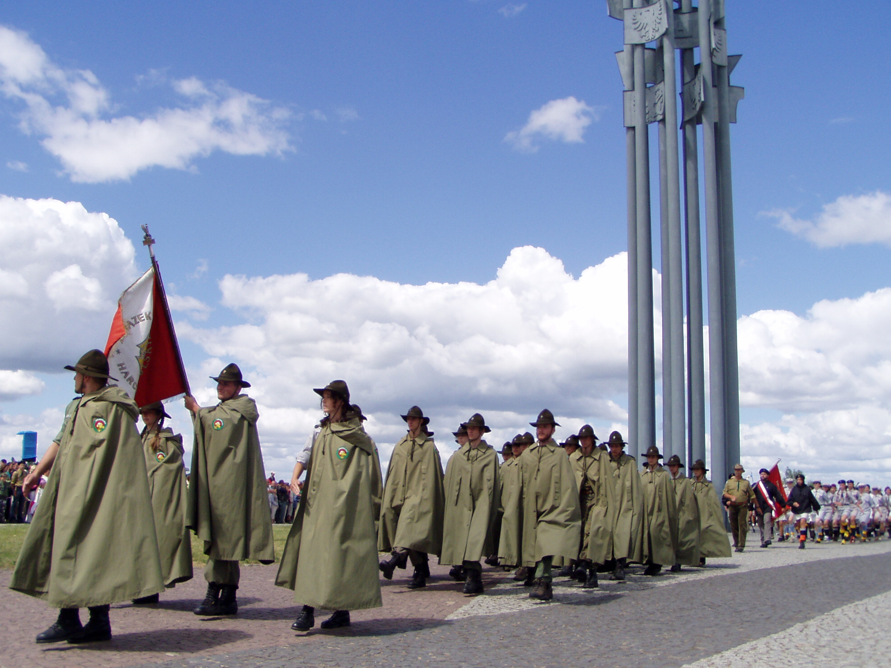
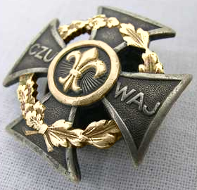
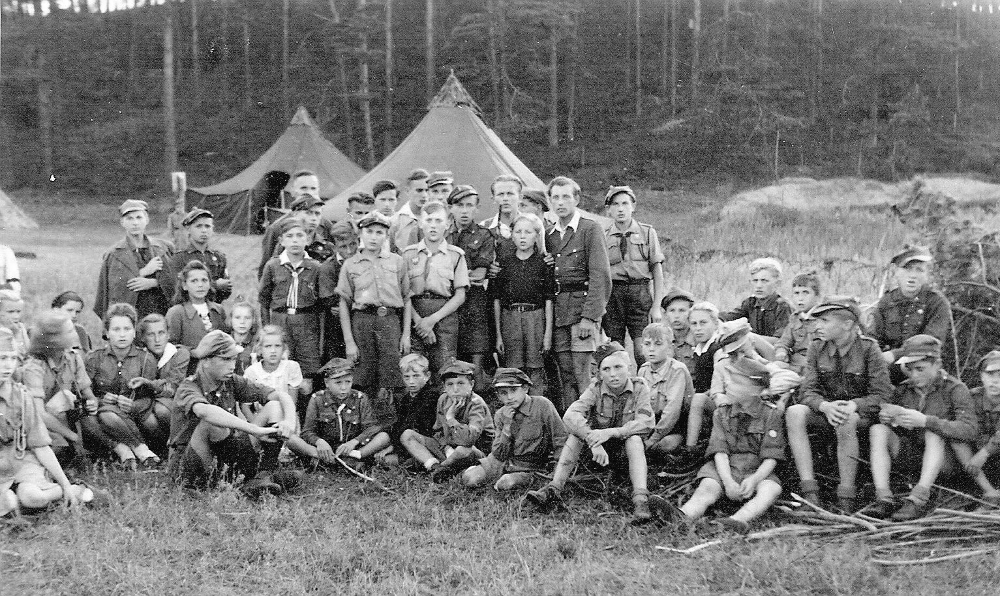

Różnice w organizacjach harcerskich
Harcerstwo – polski ruch społeczny i wychowawczy / pedagogiczny,
będący częścią ruchu skautowego. Oparty na służbie, samodoskonaleniu
(pracy nad sobą) i braterstwie. Zasady postępowania harcerza wyznacza
Przyrzeczenie harcerskie i Prawo harcerskie. Zasady postępowania zucha
wyznacza Obietnica zucha i Prawo zucha. Ruch harcerski sformalizowany
jest w szereg organizacji harcerskich pracujących w kraju i poza jego
granicami (wśród Polonii), w oparciu o powyższe zasady i unikatową
metodę harcerską. Za rok powstania harcerstwa przyjmuje się 1910, a
właściwie okres między 16 września 1910 (powstanie pierwszego zastępu) a
22 maja 1911 (powstanie pierwszych drużyn), zaś za symbolicznych
założycieli harcerstwa uważa się Andrzeja Małkowskiego i jego żonę Olgę
Drahonowską-Małkowską.


